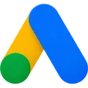
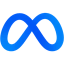
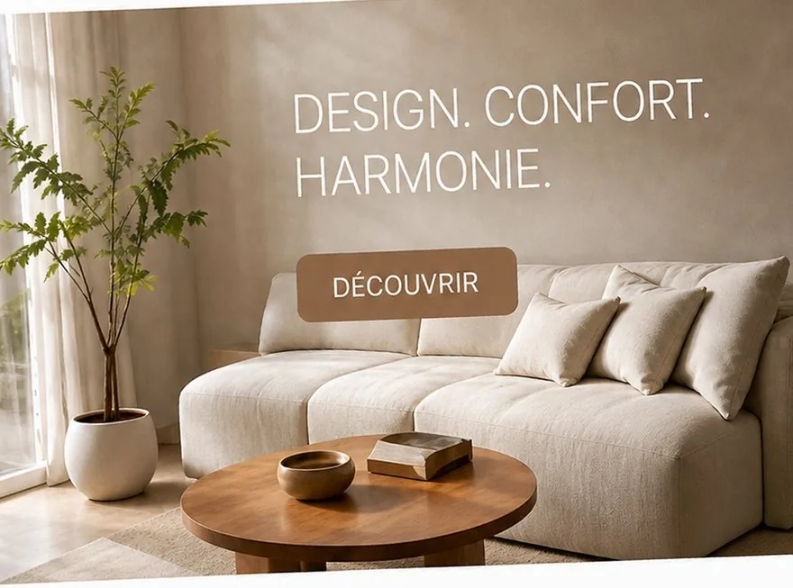
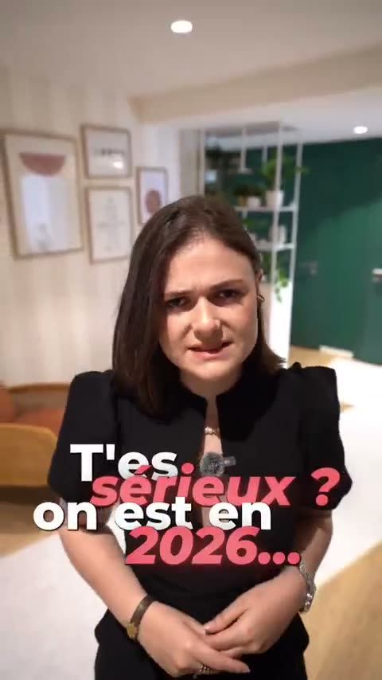
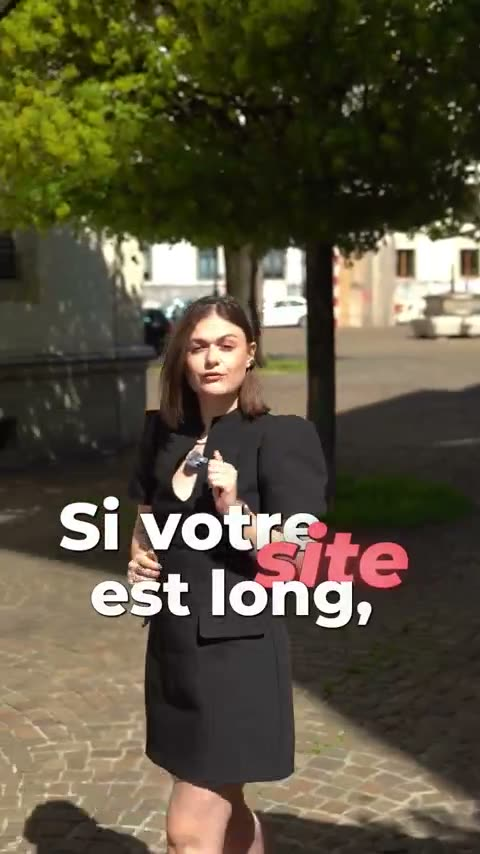
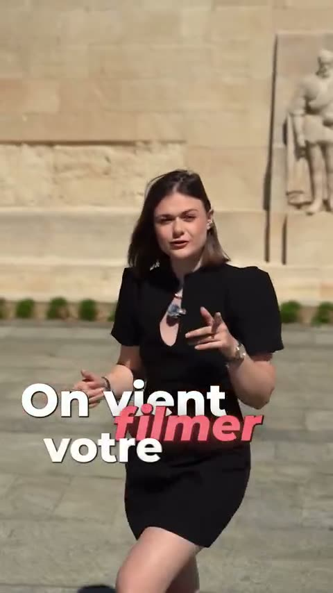
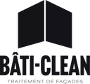
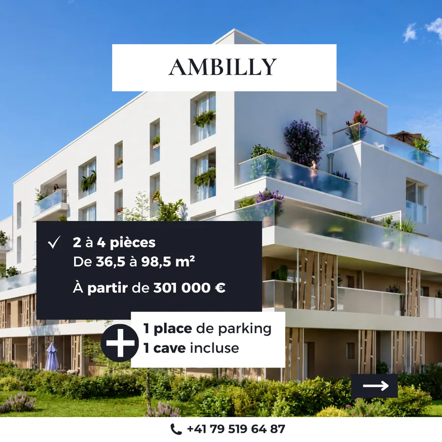
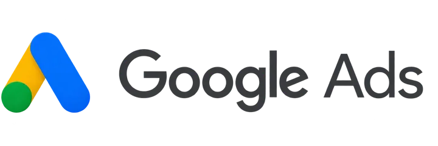
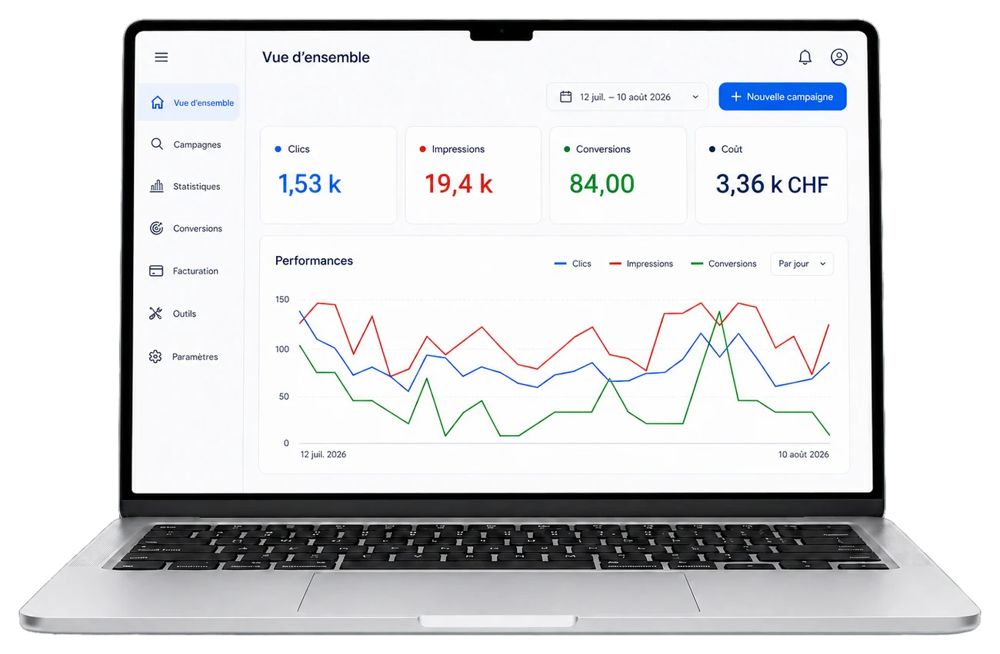

DDjamel Omriil y a 1 mois
★★★★★
Avant de travailler avec Digistylze, notre site était quasiment invisible sur Google. Grâce à leur accompagnement SEO, on est enfin en première page ! Merci !
Site web, publicité, SEO et branding pour les PME de Suisse romande, des résultats mesurés chaque mois.
★★★★★
Avant de travailler avec Digistylze, notre site était quasiment invisible sur Google. Grâce à leur accompagnement SEO, on est enfin en première page ! Merci !
★★★★★
Avant Digistylze, nos réseaux sociaux étaient peu actifs, on n'avait pas le temps. Grâce à leur accompagnement, nous avons désormais une présence digitale professionnelle et structurée qui nous a même amené des clients !
★★★★★
Très bonne expérience pour la création de notre site internet. Le projet a été bien cadré, les échanges fluides et le rendu final correspond exactement à nos attentes. Un grand merci !!
★★★★★
J'ai fait appel à l'agence Digistylze pour la refonte complète de mon site, et je suis vraiment ravi du résultat. L'équipe a été à l'écoute, réactive et très professionnelle.
★★★★★
Très bon accompagnement pour la création et la gestion de campagnes marketing digitales. Digistylze sait adapter les messages et les formats en fonction des objectifs, et nos campagnes Meta n'ont jamais été si performantes.
★★★★★
L'audit SEO a été très détaillé, avec une analyse claire de la structure du site et du contenu.
★★★★★
Belle expérience de tournage avec l'équipe Digistylze. Un grand professionnalisme si vous souhaitez faire appel à leurs services.
★★★★★
Un audit SEO très complet, avec des recommandations concrètes et adaptées à notre activité. Les optimisations ont eu un impact réel sur notre visibilité.
Tout ce qu'il faut pour être visible, crédible et rentable en ligne
Votre site est votre meilleur commercial : il travaille 24 h/24. Nous créons des sites uniques, rapides et pensés pour convertir vos visiteurs en demandes de contact.
Un design créé pour votre marque. Textes, images, structure, design… on s'occupe de tout.
Chargement optimisé, site responsive et bases SEO intégrées pour mieux vous positionner sur Google.
Un parcours conçu pour transformer vos visiteurs en prospects et générer rapidement vos premières opportunités commerciales.
Google, Meta, LinkedIn, TikTok… Nous créons et pilotons vos campagnes pour transformer votre budget publicitaire en prospects et en ventes.


Nous sélectionnons les plateformes les plus pertinentes selon vos objectifs, votre cible et votre budget.
Stratégie, annonces, visuels et vidéos… on s'occupe de tout pour lancer des campagnes qui performent.
Nous suivons les résultats, testons et ajustons vos campagnes en continu pour améliorer leur rentabilité.

Construisez une visibilité qui travaille pour vous sur le long terme. Nous optimisons votre présence sur Google et dans les réponses des IA pour attirer des prospects sans dépendre uniquement de la publicité.
Technique, contenus, autorité et référencement local pour gagner des positions sur Google.
Votre site et vos contenus sont structurés pour maximiser vos chances d'être cités et recommandés par les moteurs IA.
Gagnez en visibilité sur Google, attirez des prospects qualifiés et transformez votre référencement en véritable canal d'acquisition.
Bonjour,
Écrire un message…
Une identité forte vous rend reconnaissable avant même qu'on lise votre nom. Nous construisons un univers de marque cohérent, professionnel et pensé pour inspirer confiance dès le premier regard.
Naming, logo, palette, typographies, charte graphique et brandbook pensés autour de votre positionnement.
Une identité cohérente qui vous différencie de vos concurrents et reste en tête de vos futurs clients.
Réseaux sociaux, supports imprimés, présentations, signalétique… votre image reste cohérente sur tous vos points de contact.
Des réseaux sociaux qui ne se contentent pas d'être alimentés. Nous créons vos contenus et faisons grandir votre marque pendant que vous gérez votre activité.
Ligne éditoriale, visuels, carrousels, Reels et textes adaptés à votre marque.
Une présence régulière pour toucher votre audience et rester dans son esprit.
Des contenus pensés pour attirer, convaincre et générer des demandes de contact.
Transformez une idée ou un process métier en un outil conçu exactement pour vos besoins. Nous développons vos applications web et mobiles, de la conception au lancement.
Fonctionnalités, interface et parcours conçus autour de votre activité.
Automatisez vos process, centralisez vos données et gagnez du temps au quotidien.
Une application conçue pour grandir avec votre activité, vos utilisateurs et vos besoins.
Témoignages vidéo






Nos résultats
Chaque mission démarre avec un objectif chiffré. Voici ce que ça donne.

Roof Invest
Promotion immobilière · Genève
888'000 CHF générés
avec seulement 265 CHF investis
Roof Invest voulait accélérer les demandes de contact qualifiées sur ses programmes immobiliers à Genève, sans immobiliser un budget publicitaire important.


IMSG Business School
École de commerce · Genève
180'000 CHF générés
avec 3'360 CHF investis
IMSG cherchait à remplir ses sessions avec des candidats réellement intéressés, tout en faisant baisser un coût par lead devenu trop élevé.
Axius
Bureautique & impression · Suisse romande
1re position Google
sur plusieurs requêtes métier
Axius voulait être trouvé par les entreprises qui cherchent un prestataire bureautique près de chez elles, sur ses trois zones d’implantation.
Notre méthode
Une méthode claire, éprouvée auprès de plus de 250 clients, avec un interlocuteur à chaque étape et de vrais résultats.
On échange sur votre activité, vos objectifs et votre budget pour comprendre précisément ce dont vous avez besoin.
Nous analysons votre présence actuelle, votre marché et vos concurrents pour définir les actions prioritaires à mettre en place.
Nous passons à l’action. Vous validez les étapes clés et suivez l’avancement de votre projet en toute transparence.
Nous analysons les résultats, optimisons ce qui peut l’être et vous indiquons les prochaines actions pour continuer à progresser.
Comparez
| Critère | Agence classique | Freelance | |
|---|---|---|---|
| Délais | Annoncés et respectés | Souvent dépassés | Variables, parfois très longs |
| Tarifs | Transparents, sans frais cachés | Élevés et peu lisibles | À l'heure, difficiles à anticiper |
| Compétences | Équipe complète et polyvalente | Cloisonnées entre équipes | Limitées à un seul domaine |
| Process | Structuré et fluide | Lourd et complexe | Variable selon les projets |
| Communication | Un interlocuteur unique et direct | Interlocuteurs multiples | Pas toujours disponible |
| Flexibilité | Sur-mesure, évolue avec vous | Peu de marge en cours de projet | Suit difficilement vos besoins |
Faites glisser pour comparer →
Questions fréquentes
Digistylze
En ligne
Aujourd’hui · 9:01
Cela dépend du service et de l'ampleur du projet. Un site vitrine démarre à 2'990 CHF, une gestion de campagnes à 490 CHF/mois, un accompagnement SEO à 590 CHF/mois. Toutes nos fourchettes sont publiées sur la page Tarifs, et chaque projet reçoit un devis détaillé avant tout engagement.
Soyons francs : cela dépend du levier. La publicité en ligne donne des premiers signaux en quelques semaines. Le SEO demande 3 à 6 mois pour produire ses effets. Un nouveau site agit dès sa mise en ligne. Lors de l'audit, nous vous donnons un calendrier réaliste, pas des promesses.
Ça dépend du service. On peut travailler sans engagement, ou avec un engagement de 3, 6 ou 12 mois selon la prestation (le SEO, par exemple, demande de la durée pour porter ses fruits). On en discute ensemble selon vos objectifs.
Non. Nous accompagnons des entreprises dans toute la Suisse romande : Genève, Vaud, Fribourg, Neuchâtel, Valais. À distance ou sur place selon vos préférences.
Vous n'êtes jamais lâché dans la nature. Nous proposons maintenance, suivi et évolutions, et nous vous formons pour que vous soyez autonome sur ce que vous voulez gérer vous-même.
Oui, c'est fréquent. Site à moitié terminé, campagnes qui tournent mal, identité incohérente : nous commençons par un audit, puis nous vous disons ce qui mérite d'être gardé et ce qui doit être repris.
Nous travaillons avec des PME de tous secteurs : commerce, services, santé, construction, formation, restauration, automobile. Ce qui compte, c'est votre ambition, pas votre domaine.
Un bon freelance excelle dans son domaine, mais votre digital en couvre cinq ou six. Avec une agence, les compétences se coordonnent : le site sert les campagnes, les campagnes nourrissent votre suivi commercial, la marque reste cohérente partout. Et il y a toujours quelqu'un pour répondre, même pendant les vacances.
Contact
Bonjour ! Racontez-nous votre projet en deux lignes. On revient vers vous sous 24 h avec un premier avis honnête.